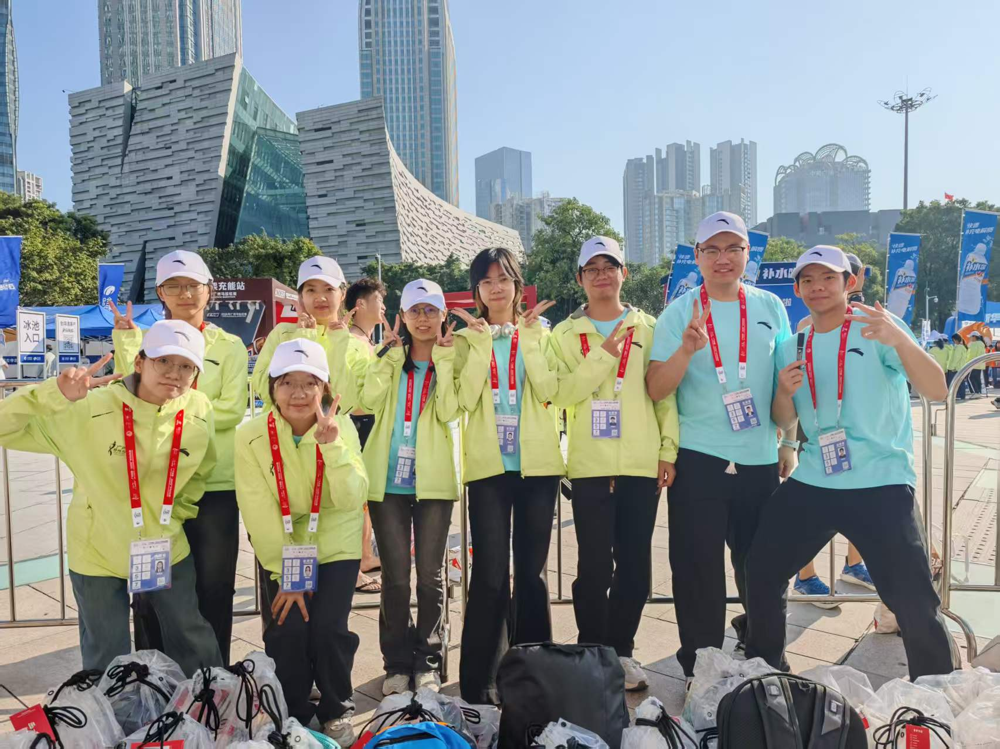

于湘怡
爱好：游泳，羽毛球，做手工制品，编曲
特长：播音主持，古筝
教育背景
本科，华南农业大学 农学（丁颖创新班）
研究方向
水稻抗逆、种子萌发调控、纳米生物刺激素
个人经历
2023.09-至今
本科｜华南农业大学 农学（丁颖创新班）
2024.07-08
泰国马哈沙拉堪大学 交流访学
2025.07-08
法国ISARA-Lyon农业中心 交流访学
2026.01-2026.03
隆平生物技术（海南）有限公司 实习生
2026.09
浙江大学生命科学学院 直博录取
科研经历
奖项荣誉
国家奖学金
校级一等奖学金
院士奖学金
校优秀学生骨干
学生工作经历
【这里填你的学生工作标题1】
内容……
【这里填你的学生工作标题2】
内容……
大型志愿服务
1：中国进出口商品交易会志愿服务，负责外商的指引工作
2.广州马拉松志愿活动，负责参赛者指引引导以及存取衣服务

个人技能
联系我
邮箱：xxx@xxx.com